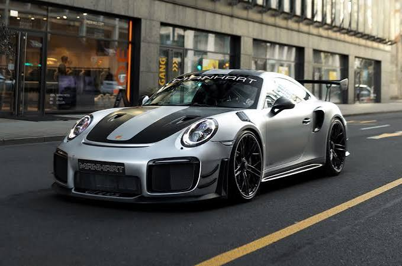

ЖУРНАЛ ОБ АВТОМОБИЛЯХ
Больше движения.
Автомобили — это не только цифры в характеристиках. Это инженерия, пропорции и ощущение дороги.

Аналитика
Как мы отбираем автомобили для каталога
Современный автопром перегружен маркетингом, поэтому при формировании базы мы игнорируем рекламные лозунги и оцениваем каждую модель по трём базовым инженерным критериям:
1
Архитектура шасси и развесовка
2
Эффективность силовой установки
3